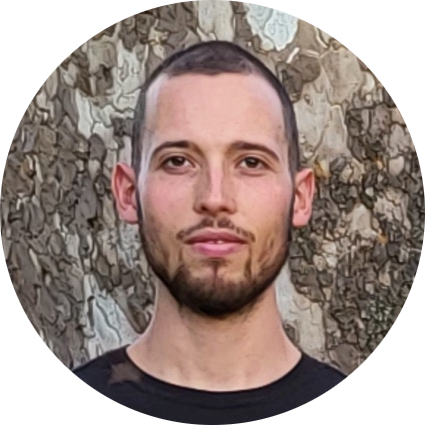

Postdoctoral Researcher · Berlin
Alessandro Gifford
I study the neural algorithm and representational content underlying visual processing, using a combination of large-scale neural datasets, computational modeling, and machine learning.
About
I'm a postdoctoral researcher in cognitive computational visual neuroscience at the Freie Universität Berlin, Germany, in the Neural Dynamics of Visual Cognition Lab led by Radoslaw Cichy.
People do science for many different reasons. As for me, I deeply enjoy intellectual challenges, and I see science as a unique realm to think, explore, discover, and create.
Besides scientific research, things in life that I appreciate are: philosophy, learning, open and honest communication, movies (independent/arthouse), electronic music, martial arts, playing Frisbee, mountain hikes, sleeping.
Publications
The human brain as a dynamic mixture of expert models in video understanding
International Conference on Learning Representations (ICLR)
In silico discovery of representational relationships across visual cortex
Nature Human Behavior
Modeling short visual events through the BOLD moments video fMRI dataset and metadata
Nature Communications
European Conference on Computer Vision (ECCV)
Contact
I am happy to hear from prospective collaborators, students interested in computational approaches to neuroscience, or anyone curious about our work.